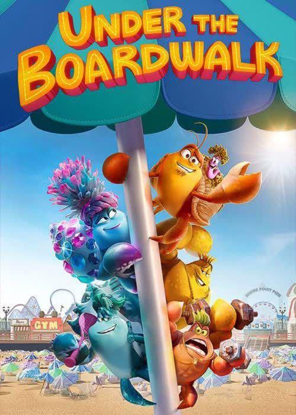
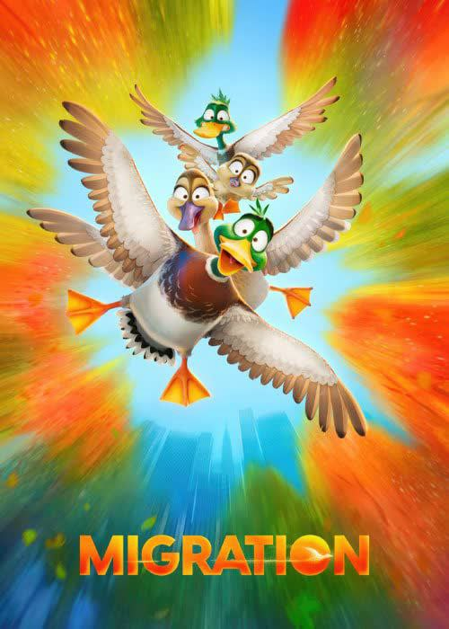
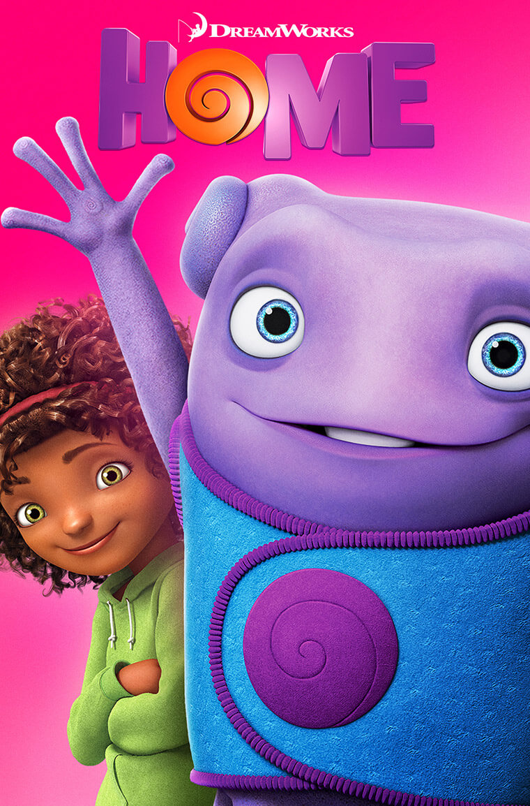

The story follows Sofia, an average girl, whose life suddenly changes when her mother marries a king. It depicts how
she adjusts to the extraordinary life and makes everyone around her feel special
SOFIA THE FIRST
Lucky, a rebellious young girl, ends up befriending Spirit, a stallion. When Spirit gets captured by a group of wranglers,
she sets out to save the day along with two horse riders./figcaption>
SPIRIT
Turbo finds himself extraordinarily gifted after a freak accident endows him with the power of speed.
He decides to compete in the world's fastest race, the Indianapolis 500
TURBO
Marmaduke is a lovable pet that loves his human family but cannot stay out of trouble. When a legendary dog trainer undertakes
the mission of turning the undisciplined Great Dane to a world champion, the results are hilarious
MARMADUKE

Two crabs embark on an epic journey to get home after a storm sweeps them away. Their courage soon unites their families,
paving the way for great summers to come
UNDER THE BOARDWALK

A family of ducks decides to leave the safety of a New England pond for an adventurous trip to Jamaica.
However, their well-laid plans quickly go awry when they get lost and wind up in New York City.
MIGRATION
Chip and Dale live amongst cartoons and humans in modern-day Los Angeles, but their lives are quite different now. When a former cast mate mysteriously disappears,
Chip and Dale must repair their broken friendship and save their friend
CHIP AND DALE

Oh, a lovable misfit alien, runs away from his planet and takes shelter on Earth, where he befriends Tip,
an adventurous young girl who is on a quest to find her displaced mother Lucy.